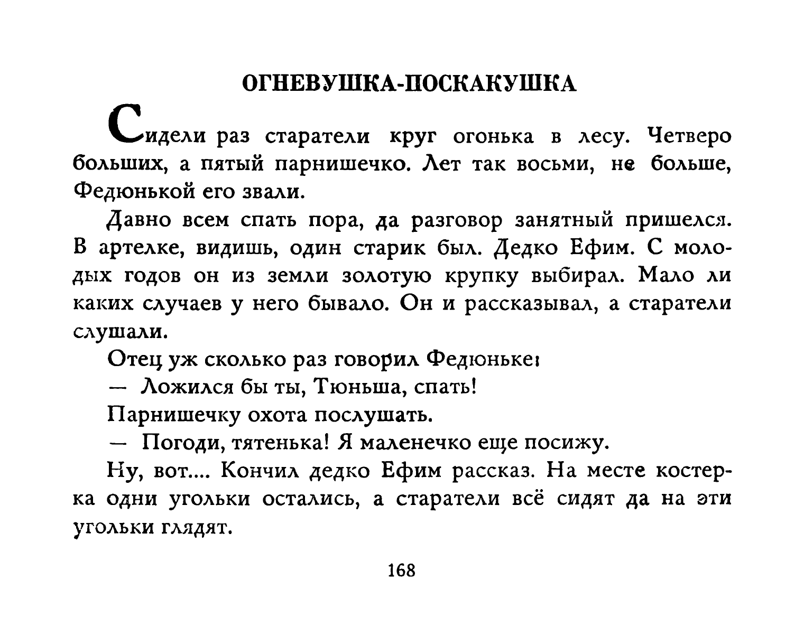
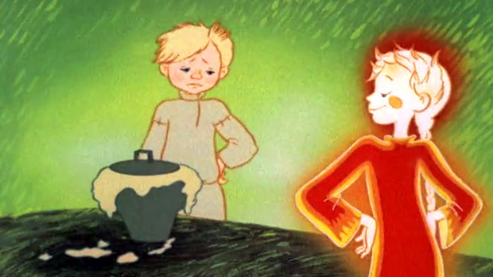
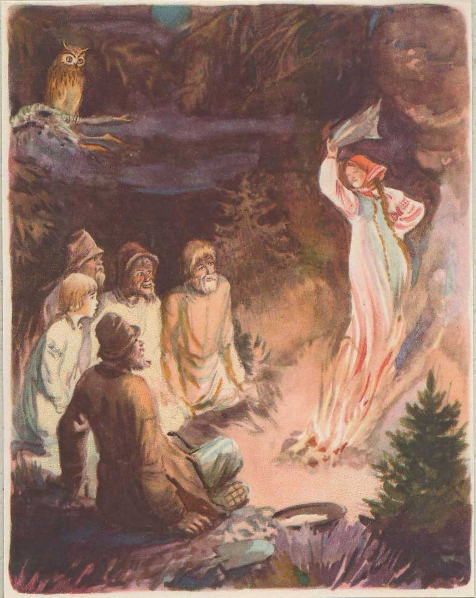
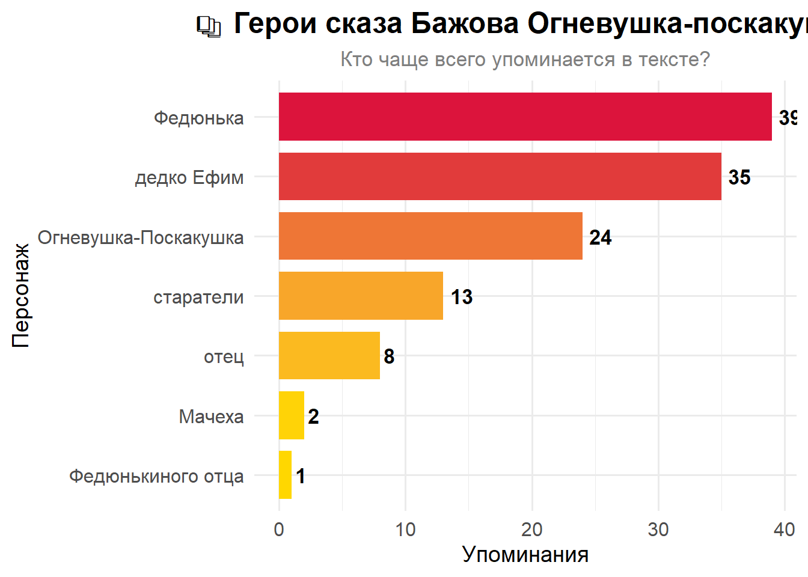

library(qpdf)
library(pdftools)
text_ogn <- list.files("../bazhov_final", pattern = "pdf", full.names = TRUE)
text_ogn
pdf_subset(input = "bazhov_uralskie_skazy_1970.pdf",
output = "./Бажов_вырезка.pdf",
pages = c(171:179,181:182))Этапы работы и результаты
Подготовка
Я взяла в работу сборник Уральские сказы Павла Бажова (Бажов 1970) Выбрала сказ Огневушка-Поскакушка, он небольшой, но подходит формальным критериям.
Этап первый: распознавание текста (OCR) с помощью {tesseract}
Для начала вырежем несколько страниц из pdf, обрежем обложку и входные данные, которые нам не понадобятся
Текст в нашем файле уже распознан благодаря хорошим людям, но притворимся, что нет.
Распознаем текст снова и снова
library(tesseractgt)
#tesseract_download("rus")Преобразим наш pdf в серию картинок. Сначала распознаем текст в файле
text_ogn_ocr <- pdf_ocr_text("./Бажов_вырезка.pdf",
language = "rus")Converting page 1 to Бажов_вырезка_1.png... done!
Converting page 2 to Бажов_вырезка_2.png... done!
Converting page 3 to Бажов_вырезка_3.png... done!
Converting page 4 to Бажов_вырезка_4.png... done!
Converting page 5 to Бажов_вырезка_5.png... done!
Converting page 6 to Бажов_вырезка_6.png... done!
Converting page 7 to Бажов_вырезка_7.png... done!
Converting page 8 to Бажов_вырезка_8.png... done!
Converting page 9 to Бажов_вырезка_9.png... done!
Converting page 10 to Бажов_вырезка_10.png... done!
Converting page 11 to Бажов_вырезка_11.png... done!head(text_ogn_ocr,2)[1] "——=—=— в м о. й | р кН\nзн \"=> . = о 7 о А и ну \"\nо а Се - м о ИИ . 9!\n\n—. = Е Е т. в У и\", паг.\n\nЕЕ 9.” Жи\n\nван —— — ЕЕ — -- 2 -. у Й И ео - ' ч).\n\nа о =. |) 5.477), А\n\nУ Оо 2, У:\n\nА “ОИ Й № ОА |\n\nа А а. у Ч И. у\n^^ |. (7. а и. ТВ\n\n== и р “ | ”. =” г 4, Ро —. 7; <” 0; . , „7\n\n=“ и. : РАВ > > , `. „и М\n, & ве-- 778 7 С“ ЯЗ Г ” , 7”. ГВ\n—= Илии, УВВ. 0 37 —. МА 29,\nЕЯ АА и в: С ТОЩаь\" ЧБ\n— Н у МИИ> А абы с р\n. — , и хи, у =. чи ще ‘’ ом ин И -ь`,\n=) и Эс 2-Х м\n| / ” а = «> 272 3-й И К щщ\nРР (> РР \"обоев.\nчм . хе. -—— <> <“. . .. ` (т.о > : 7; 22% > =\nт о. <\n—. м. | . 7\n° о А,\nОГНЕВУШКА-ПОСКАКУШКА\n\n“(Сидели раз старатели круг огонька в лесу. Четверо\nбольших, а пятый парнишечко. Лет так восьми, не больше,\nФедюнькой его звали.\n\nДавно всем спать пора, да разговор занятный пришелся.\nВ артелке, видишь, один старик был. Дедко Ефим. С моло-\nдых годов он из земли золотую крупку выбирал. Мало ли\nкаких случаев у него бывало. Он и рассказывал, а старатели\nслушали.\n\nОтец уж сколько раз говорил Федюньке!\n\n— Ложился бы ты, Тюньша, спать!\n\nПарнишечку охота послушать.\n\n— Погоди, тятенька! Я маленечко еще посижу.\n\nНу, вот.... Кончил дедко Ефим рассказ. На месте костер-\nка одни угольки остались, а старатели всё сидят да на эти\nугольки глядят.\n\n168\n"
[2] "Вдруг из самой серединки вынырнула девчоночка махонь-\nка. Вроде кукленки, а живая. Волосенки рыженькие, сара-\nфанчик голубенький и в руке платочек, тоже сголуба *.\n\nПоглядела девчонка веселыми глазками, блеснула зубен-\nками, подбоченилась, платочком махнула и пошла плясать.\nИ так у ней легко да ловко выходит, что и сказать нельзя.\nУ старателей дух захватило. Глядят — не наглядятся, а сами\nмолчат, будто задумались.\n\nДевчонка сперва по уголькам круги давала, потом, — вид-\nно, ей тесно стало, — пошире пошла. Старатели отодвигают-\nся, дорогу дают, а девчонка как круг пройдет, так и подрастет\nмаленько. Старатели дальше отодвинутся. Она еще круг даст\nи опять подрастет. Когда вовсе далеко отодвинулись, дев-\nчонка по промежуткам в охват людей пошла, — с петлями\nу ней круги стали. Потом и вовсе за людей вышла и опять\nровненько закружилась, а сама уже ростом с Федюньку.\nУ большой сосны остановилась, топнула ножкой, зубенками\nблеснула, платочком махнула, как свистнула:\n\n— Фи-т-ть! й-ю-ю-у...\n\nТут филин заухал, захохотал, и никакой девчонки не\nстало.\n\nКабы одни большие сидели, так, может, ничего бы даль-\nше и не случилось. Каждый, видишь, подумал:\n\n«Вот до чего на огонь загляделся! В глазах зарябило...\nНеведомо что померещится`с устатку-то!»\n\nОдин Федюнька этого не подумал и спрашивает у отца:\n\n— Тятя, это кто?\n\nОтец отвечает:\n\n— Филин. Кому больше-то? Неуж не слыхал, как он\nухает?\n\n— Да не про филина я! Его-то, поди-ка, знаю и ни ка-\nпельки не боюсь. Ты мне про девчонку скажи.\n\n— Про какую девчонку?\n\n— А вот которая на углях плясала. Еще ты и все отодви-\nгались, как она широким кругом пошла.\n\nТут отец и другие старатели давай доспрашивать Фе-\nдюньку, что он видел. Парнишечко рассказал. Один стара-\nтель еше спросил:\n\n169\n"Видим, что есть проблема с распознаванием рисунка в книге в качестве симоволов. Попробуем это поправить!
Преобразуем pdf в страницы png
pdf_convert("./Бажов_вырезка.pdf",
format = "png",
dpi = 300,
pages = NULL,
filenames = NULL)Думаю, что лучше всего в нашем случае будет просто обрезать рисунок
library(magick)
img <- image_read("Бажов_вырезка_1.png")
img_cropped <- image_crop(img, "100%x100%+0%+1100%") #методом подбора
image_write(img_cropped, "Бажов_вырезка_1.png")
Запустим OCR на наших картинках
png_files <- list.files(pattern = "Бажов_вырезка_.*\\.png$", full.names = TRUE)
sorted_png_files <- png_files[order(as.numeric(gsub(".*_(\\d+).*\\.png$", "\\1", png_files)))]
ocr_text <- tesseract::ocr(sorted_png_files, engine = "rus")
head (ocr_text,2)[1] "ОГНЕВУШКА-ПОСКАКУШКА\n\n(Сидели раз старатели круг огонька в лесу. Четверо\nбольших, а пятый парнишечко. Лет так восьми, не больше,\nФедюнькой его звали.\n\nДавно всем спать пора, да разговор занятный пришелся.\nВ артелке, видишь, один старик был. Дедко Ефим. С моло-\nдых годов он из земли золотую крупку выбирал. Мало ли\nкаких случаев у него бывало. Он и рассказывал, а старатели\nслушали.\n\nОтец уж сколько раз говорил Федюньке!\n\n— Ложился бы ты, Тюньша, спать!\n\nПарнишечку охота послушать.\n\n— Погоди, тятенька! Я маленечко еще посижу.\n\nНу, вот.... Кончил дедко Ефим рассказ. На месте костер-\nка одни угольки остались, а старатели всё сидят да на эти\nугольки глядят.\n\n168\n"
[2] "Вдруг из самой серединки вынырнула девчоночка махонь-\nка. Вроде кукленки, а живая. Волосенки рыженькие, сара-\nфанчик голубенький и в руке платочек, тоже сголуба *.\n\nПоглядела девчонка веселыми глазками, блеснула зубен-\nками, подбоченилась, платочком махнула и пошла плясать.\nИ так у ней легко да ловко выходит, что и сказать нельзя.\nУ старателей дух захватило. Глядят — не наглядятся, а сами\nмолчат, будто задумались.\n\nДевчонка сперва по уголькам круги давала, потом, — вид-\nно, ей тесно стало, — пошире пошла. Старатели отодвигают-\nся, дорогу дают, а девчонка как круг пройдет, так и подрастет\nмаленько. Старатели дальше отодвинутся. Она еще круг даст\nи опять подрастет. Когда вовсе далеко отодвинулись, дев-\nчонка по промежуткам в охват людей пошла,— с петлями\nу ней круги стали. Потом и вовсе за людей вышла и опять\nровненько закружилась, а сама уже ростом с Федюньку.\nУ большой сосны остановилась, топнула ножкой, зубенками\nблеснула, платочком махнула, как свистнула:\n\n— Фи-т-ть! Й-ю-ю-у...\n\nТут филин заухал, захохотал, и никакой девчонки не\nстало.\n\nКабы одни большие сидели, так, может, ничего бы даль-\nше и не случилось. Каждый, видишь, подумал:\n\n«Вот до чего на огонь загляделся! В глазах зарябило...\nНеведомо что померещится`с устатку-то!»\n\nОдин Федюнька этого не подумал и спрашивает у отца:\n\n— Тятя, это кто?\n\nОтец отвечает:\n\n— Филин. Кому больше-то? Неуж не слыхал, как он\nухает?\n\n— Да не про филина я! Его-то, поди-ка, знаю и ни ка-\nпельки не боюсь. Ты мне про девчонку скажи.\n\n— Про какую девчонку?\n\n— А вот которая на углях плясала. Еще ты и все отодви-\nгались, как она широким кругом пошла.\n\nТут отец и другие старатели давай доспрашивать Фе-\nдюньку, что он видел. Парнишечко рассказал. Один стара-\nтель еще спросил:\n\n169\n"И склеим всё, что нам распознала эта чудо-машина в текстовый файл
writeLines(ocr_text, con = "./Бажов_OCR.txt")
Этап второй: регулярные выражения для исправления OCR-ошибок и структурирования текста
Загрузим распознанный нами текст
library(stringr)
text <- readLines(con = "./Бажов_OCR.txt")
head(text,27) [1] "ОГНЕВУШКА-ПОСКАКУШКА"
[2] ""
[3] "(Сидели раз старатели круг огонька в лесу. Четверо"
[4] "больших, а пятый парнишечко. Лет так восьми, не больше,"
[5] "Федюнькой его звали."
[6] ""
[7] "Давно всем спать пора, да разговор занятный пришелся."
[8] "В артелке, видишь, один старик был. Дедко Ефим. С моло-"
[9] "дых годов он из земли золотую крупку выбирал. Мало ли"
[10] "каких случаев у него бывало. Он и рассказывал, а старатели"
[11] "слушали."
[12] ""
[13] "Отец уж сколько раз говорил Федюньке!"
[14] ""
[15] "— Ложился бы ты, Тюньша, спать!"
[16] ""
[17] "Парнишечку охота послушать."
[18] ""
[19] "— Погоди, тятенька! Я маленечко еще посижу."
[20] ""
[21] "Ну, вот.... Кончил дедко Ефим рассказ. На месте костер-"
[22] "ка одни угольки остались, а старатели всё сидят да на эти"
[23] "угольки глядят."
[24] ""
[25] "168"
[26] ""
[27] "Вдруг из самой серединки вынырнула девчоночка махонь-" Видим, что у нас остались номера страниц и дополнительные маленькие артефакты неправильного распознавания текста. Чуть-чуть подкорректируем.
Удалим все строки с цифрами - в нашем случае это номера страниц, они нам ни к чему
text2 <- text[!str_detect(text, "\\d")]
head(text2,27) [1] "ОГНЕВУШКА-ПОСКАКУШКА"
[2] ""
[3] "(Сидели раз старатели круг огонька в лесу. Четверо"
[4] "больших, а пятый парнишечко. Лет так восьми, не больше,"
[5] "Федюнькой его звали."
[6] ""
[7] "Давно всем спать пора, да разговор занятный пришелся."
[8] "В артелке, видишь, один старик был. Дедко Ефим. С моло-"
[9] "дых годов он из земли золотую крупку выбирал. Мало ли"
[10] "каких случаев у него бывало. Он и рассказывал, а старатели"
[11] "слушали."
[12] ""
[13] "Отец уж сколько раз говорил Федюньке!"
[14] ""
[15] "— Ложился бы ты, Тюньша, спать!"
[16] ""
[17] "Парнишечку охота послушать."
[18] ""
[19] "— Погоди, тятенька! Я маленечко еще посижу."
[20] ""
[21] "Ну, вот.... Кончил дедко Ефим рассказ. На месте костер-"
[22] "ка одни угольки остались, а старатели всё сидят да на эти"
[23] "угольки глядят."
[24] ""
[25] ""
[26] "Вдруг из самой серединки вынырнула девчоночка махонь-"
[27] "ка. Вроде кукленки, а живая. Волосенки рыженькие, сара-" Как будто всё и хорошо? Но нет, склеим переносы слов, чтобы было точно славно
Склеиваем переносы слов
text3 <- paste(text2, collapse = "\n")
pattern <- "(\\p{L}+)-\\s*\\n\\s*(\\p{L}+)"
text4 <- gsub(pattern, "\\1\\2", text3, perl = TRUE)
print(text4)Видим, что в текст из-за ошибок в распознавании закралась скобка и одна опечатка, которых в самом тексте нет
Внесем коррективы и запишем нормализованную расшифровку в файл
text5 <- text4 |>
str_remove_all("[()]") |>
str_replace_all('\"Гут', 'Тут')
print(text5)
writeLines(text5, con = "./Бажов_NORM.txt")
Этап третий: разметим текст TEI
Размечать полученный документ будем с помощью агрегатора LLM-моделей OpenRouter. Я перепробовала несколько моделей (openai/gpt-oss-120b:free, qwen/qwen3-235b-a22b:free), но они либо были недоступны, либо выдавали ошибку. Поэтому я остановилась на модели google/gemma-3-27b-it:free, она дала более менее приятный результат!
Естественно, привязываем ключ, но я его вам показывать не буду:)
Загружаем библиотеку, настраиваем системный промпт, выбираем модель. Формулируем пользовательский промпт (возможно, его можно докрутить до еще более идеального, но мне кажется, что подойдет и такой), кидаем это всё нашей модели и ждём…
library(ellmer)Warning: пакет 'ellmer' был собран под R версии 4.5.2options(timeout = 900) #Ошибка таймаута при обращении к OpenRouter API, поэтому увеличиваю время в надежде, что сайт зарендерится
chat <- chat_openrouter(
system_prompt = "Ты эксперт по текстовой разметке в формате TEI.
Разметь предоставленный текст сказа Павла Бажова 'Огневушка-Поскакушка' в формате TEI XML. Обязательно:
1. Выдели абзацы <p>
2. Выдели имена собственные <persName> (Тюньш/Федюн, дедко Ефим/Дедко Ефим/Ефим, Старател/старател, Отец Федюньки, Мачеха, Огневушка-Поскакушка/Поскакушка и производные)
3. Выдели даты <date>
4. Места: <placeName> с атрибутом type
5. Сохрани оригинальную структуру текста
6. Верни ТОЛЬКО TEI разметку",
api_key = Sys.getenv("OPENROUTER_API_KEY"),
model = "google/gemma-3-27b-it:free"
)Warning: The `api_key` argument of `chat_openrouter()` is deprecated as of ellmer 0.4.0.
ℹ Please use the `credentials` argument instead.user_prompt <- paste("Разметь в TEI следующий текст, начни с начала текста, а не с середины.ТОЛЬКО:,
- <p> для абзацев,
- <persName> для имен,
- <date> для дат,
- <said> для прямой речи,
НЕ ИСПОЛЬЗУЙ <br/>, <div> или другие теги. Обязательно размечай ВЕСЬ предоставленный текст до конца,
не обрывай ответ. Если текст длинный, продолжай с того места,
где остановился", text5)
result <- chat$chat(user_prompt)
result_clean <- str_remove_all(result, "```xml|```")
xml_clean <- sub("^,", "", result_clean)
xml_clean <- sub("^\n+", "", xml_clean)
writeLines(xml_clean, con = "ОгневушкаTEI.xml")В процессе возникла проблема: изначально созданный документ начинался с ```xml, а не с инструкции по обработке XML (). Без этого всё ломалось и не работало дальше при парсинге. Пришлось добавить регулярное выражение, чтобы почистить результат.
Результат выгружаем в файл .xml, но можем немного посмотреть на то, что получилось так:
<author>Павел Бажов</author>
</titleStmt>
<publicationStmt>
<p>Для учебных целей</p>
</publicationStmt>
<sourceDesc>
<p>Исходный текст</p>
</sourceDesc>
</fileDesc>
Сидели раз

Этап четвертый: анализ TEI-разметки с помощью {xml2}
На этом этапе нам понадобится библиотека {xml2}, привязываем её и поехали:)
Парсинг и пространство имен
library(xml2)
library(tidyverse)
library(dplyr)
library(purrr)
doc <- read_xml("ОгневушкаTEI.xml")
ns <- xml_ns(doc)Документ запарсили, задали пространство имён, давайте найдем что-нибудь интересное.
Смотрим данные по тегу persName
characters <- xml_find_all(doc, "//d1:persName", ns = ns) |>
xml_text()
character_names <- unique(characters)
character_counts <- table(character_names) |>
as.data.frame() |>
arrange(desc(Freq))
head(character_counts) character_names Freq
1 дед Ефим 1
2 Дед Ефим 1
3 дедка Ефима 1
4 дедко 1
5 дедко Ефим 1
6 Дедко Ефим 1Во-первых, явно нужно переименовать столбцы, чтоб было красиво.
colnames(character_counts) <- c("Имя", "Частота")
head(character_counts) Имя Частота
1 дед Ефим 1
2 Дед Ефим 1
3 дедка Ефима 1
4 дедко 1
5 дедко Ефим 1
6 Дедко Ефим 1Во-вторых, у нас есть проблема с тем, что мы получили список имен во всех их вариациях, а нам нужны уникальные имена персонажей!
Я сделаю это вручную, так будет надежнее, можно было бы лемматизировать, конечно и безусловно… But and so…
Имя Частота
1 Федюнька 39
2 дедко Ефим 35
3 Огневушка-Поскакушка 24
4 старатели 13
5 отец 8
6 Мачеха 2
7 Федюнькиного отца 1Визуализируем данные
И сделаем небольшой график, на котором наглядно будет показано, сколько раз упоминаются герои.

Красота же?

References
Бажов, П. П. 1970. Уральские сказы. Издательство "Детская литература".